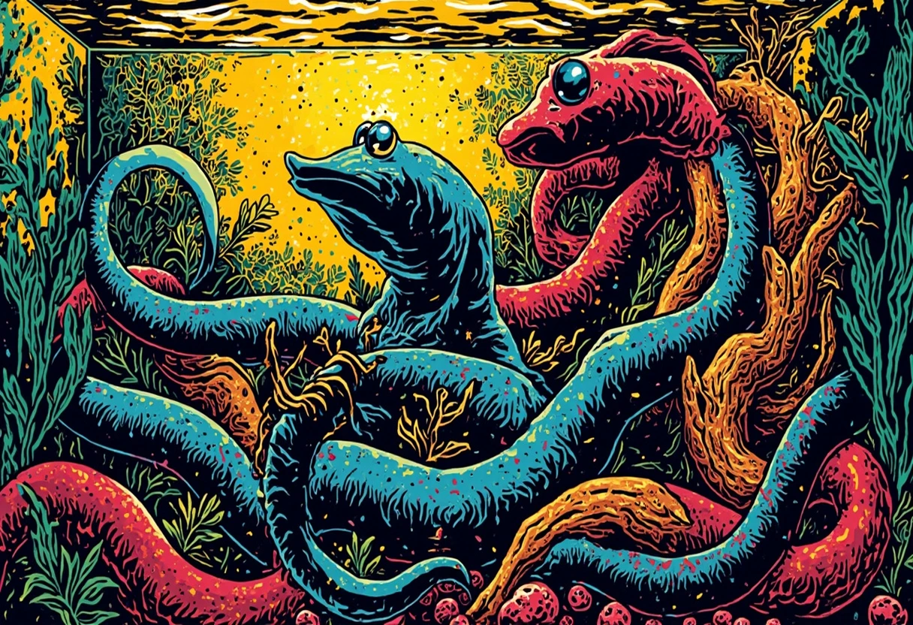

Lesezeit: 8 Minuten | Kategorie: Pflege | 4. Juni 2026
Ein gepflegtes Aquarium ist eine Wohlfühloase – für Fische, Garnelen und Pflanzen. Doch manchmal halten sich ungebetene Gäste ein: Planarien, Hydra, eine Schneckenplage oder winzige Würmer können das Becken im Handumdrehen besiedeln. Viele Aquarianer geraten dann in Panik, doch das muss nicht sein. In diesem Guide erfährst du, welche Schädlinge wirklich gefährlich sind, wie du sie gezielt bekämpfst und welche Maßnahmen langfristig helfen, das Aquarium sauber und gesund zu halten.
Nicht jedes Kleintier, das du im Aquarium entdeckst, ist automatisch ein Problem. Manche sind harmlose Begleiter, andere können zur echten Plage werden. Die häufigsten Aquarium-Schädlinge sind:
Die gute Nachricht: Mit den richtigen Methoden kannst du jeden dieser Schädlinge in den Griff bekommen. Fangen wir mit dem Klassiker an – den Planarien.
Planarien sind flache, dreieckig geformte Strudelwürmer, die sich meist nachts oder in Bodennähe bewegen. Sie haben charakteristische „Augenflecken" am Kopf und gleiten mit einer wellenförmigen Bewegung über Glas und Dekoration. Sie gelangen oft durch neue Pflanzen, Lebendfutter oder bereits befallene Tiere ins Aquarium.
Eine der wirkungsvollsten Methoden gegen Planarien ist eine einfache Falle, die du selbst bauen kannst:
Wiederhole dies mehrere Nächte lang. Noch effektiver sind kommerzielle Planarienfallen, die speziell für diese Würmer entwickelt wurden:
Medikamente aus der Tiermedizin nicht auf Verdacht oder nach einem pauschalen Internetrezept einsetzen. Bestimme zunächst den Organismus und prüfe, ob tatsächlich eine Gefahr für den Besatz besteht. Falls eine Behandlung nötig ist, müssen Produkt, Wirkstoff, betroffene Arten und konkrete Anwendung fachkundig geklärt werden. Eine allgemeine Zusage „unschädlich für Fische“ oder ein festes Wiederholungs- und Wasserwechselschema ist dafür keine ausreichende Grundlage.
Hydra sind winzige, bis zu 2 cm große Nesseltiere mit einem fadenförmigen Körper und Tentakeln. Sie sehen aus wie kleine Polypen und haften an Glas, Steinen oder Pflanzen. Ihre Nesselzellen können Kleinstlebewesen, aber auch junge Garnelen und Fischlarven lähmen und fressen.
Eine der einfachsten Methoden ist der Einsatz von Panzerwelsen – viele Arten wie der Corydoras paleatus fressen Hydra zuverlässig weg. Auch Paradisfische (Macropodus opercularis) und Fadenfische sind natürliche Fressfeinde. Sogar junge Guppys und Mollys knabbern gelegentlich an Hydra, wenn sie hungrig genug sind.
Dieser Ratgeber empfiehlt keine pauschale Dunkelkur gegen Hydra. Eine feste Zahl dunkler Tage ist hier nicht als wirksame und zugleich für den gesamten Besatz verträgliche Behandlung belegt.
Keine pauschale Wasserstoffperoxid- oder Kaliumpermanganat-Dosierung zur Behandlung von Hydra übernehmen. Konzentration, Einwirkzeit, organische Belastung und Empfindlichkeit des Besatzes sind entscheidend. Das Merck Veterinary Manual beschreibt artspezifische Empfindlichkeiten gegenüber Wasserstoffperoxid und warnt vor tödlichen Folgen einer Überanwendung von Kaliumpermanganat. Daraus ergibt sich keine Freigabe für ein allgemeines Hydra-Rezept. Vor einer chemischen Behandlung Organismus und tatsächlichen Handlungsbedarf klären und eine geeignete, konkret für die Anwendung vorgesehene Produktanleitung beziehungsweise fischkundige tierärztliche Beratung heranziehen.
Was viele nicht wissen: Schnecken sind eigentlich keine Schädlinge. Sie sind wichtige Saubermacher und fressen Futterreste, Algen und abgestorbene Pflanzenteile. Erst wenn sie sich massenhaft vermehren, werden sie zum Problem.
Die Hauptursache ist Überfütterung. Pro Schnecke muss etwa 1 mm² Futter pro Tag zur Verfügung stehen, um sich zu ernähren. Wenn mehr Futter ins Becken fällt, als die Fische fressen, haben Schnecken freie Bahn. Auch Pflanzenreste, die im Becken verrotten, dienen als Nahrungsquelle.
Federwürmer (auch Röhrenwürmer genannt) und Borstenwürmer sehen mit ihren fächerartigen Tentakeln an den Enden oft spektakulär aus. Viele Aquarianer halten sie sogar für schön – ihr aquatischer „Weihnachtsbaum" kann ein echter Hingucker sein. Dennoch werden sie oft als Schädlinge abgestempelt.
Gut zu wissen: Die meisten Federwürmer sind völlig harmlose Filterierer, die im Substrat oder in Spalten leben und organische Partikel aus dem Wasser filtern. Sie sind ein Zeichen für gutes, reifes Wasser. Borstenwürmer (z. B. Ophryotrocha) sind dagegen Aasfresser und ernähren sich von Futterresten und toten Tieren.
Nur wenn sie sich massenhaft vermehren, wird es problematisch, da sie dann Nährstoffkreisläufe stören können. In einem gut gepflegten Becken reguliert sich die Population normalerweise von selbst. Sollten sie überhandnehmen:
Wasserflöhe (Daphnien) und Hüpferlinge (Copepoden wie Cyclops) sind winzige Krebstierchen, die in fast jedem Aquarium vorkommen. Sie sind ein natürlicher Teil des Ökosystems und für die meisten Aquarien ausgesprochen nützlich:
Wann werden sie zum Problem? Wenn Hüpferlinge in extremen Massen auftreten, deutet dies meist auf eine Nährstoffüberlastung hin – zu viel Futter, zu viele Nährstoffe im Wasser. Die winzigen Krebse nutzen das Überangebot zur explosionsartigen Vermehrung. In diesem Fall hilft:
Der beste Schutz gegen Aquarium-Schädlinge ist eine gute Vorbeugung. Fast alle Plagen gelangen durch neue Pflanzen, Tiere oder Wasser ins Becken.
Die Frage nach der richtigen Bekämpfungsmethode ist eine der meistdiskutierten in der Aquaristik. Beide Ansätze haben Vor- und Nachteile:
| Kriterium | Biologische Bekämpfung | Chemische Bekämpfung |
|---|---|---|
| Wirkung | Langsam, aber nachhaltig | Schnell und effektiv |
| Risiken | Kaum – nur bei falscher Fischauswahl | Kann Wirbellose schädigen, Biologie beeinträchtigen |
| Nebenwirkungen | Keine | Mögliche Resistenzbildung, Schädigung der Filterbakterien |
| Kosten | Günstig bis mittel (Fressfeinde) | Mittel (Medikamente oft 10–25 €) |
| Nachhaltigkeit | Hoch – natürliches Gleichgewicht | Niedrig – Symptombekämpfung |
Unser Tipp: Beginne immer mit biologischen Maßnahmen. Reduziere die Fütterung, setze Fressfeinde ein oder baue Fallen. Nur wenn dies nicht hilft und der Befall akut bedrohlich ist (z. B. Hydra bei Garnelennachwuchs oder Planarien in der Zucht), greife zu chemischen Mitteln – und dann bitte zielgerichtet und mit Vorsicht.
Aquarium-Schädlinge sind zwar lästig, aber in den allermeisten Fällen kein Grund zur Panik. Die Natur reguliert sich meist selbst, wenn du die Ursachen bekämpfst: Überfütterung, mangelnde Hygiene und fehlende Quarantäne sind die Hauptgründe für eine Schädlingsplage.
Mit diesem Wissen kannst du:
Denk immer daran: Ein gesundes Aquarium ist ein stabiles Ökosystem. Jeder Schädling ist eigentlich ein Hinweis auf ein Ungleichgewicht. Wer die Ursache behebt, wird langfristig die schönere und pflegeleichtere Unterwasserwelt haben.
Hast du Fragen zu einem bestimmten Schädling oder eigene Erfahrungen mit einer Plage? Teile sie mit der Community – gemeinsam findet sich immer die beste Lösung für ein gesundes Aquarium!